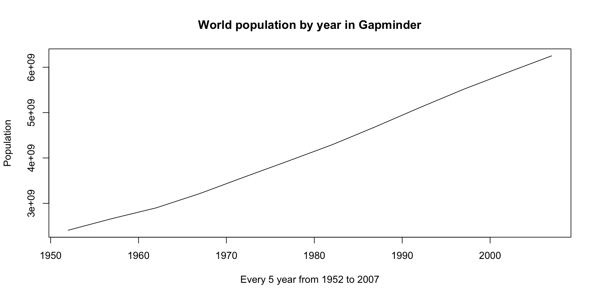
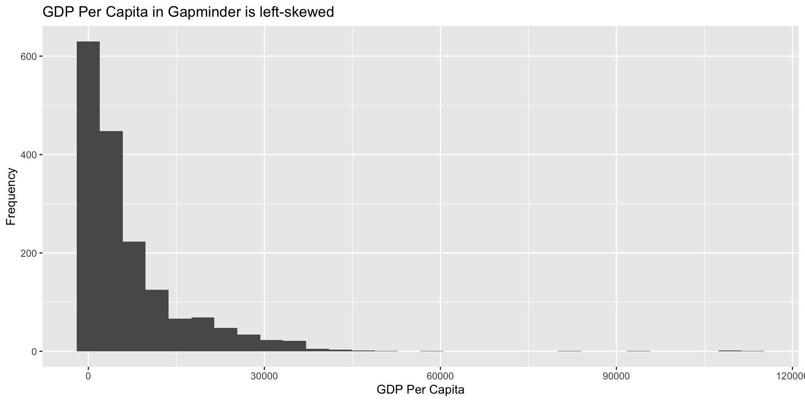
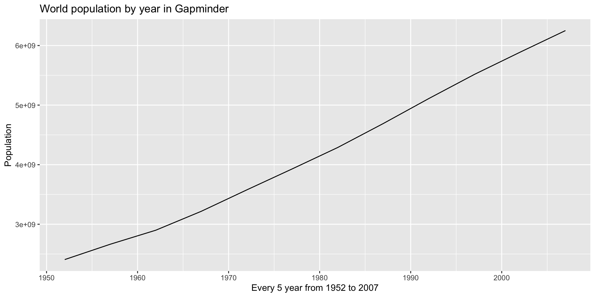
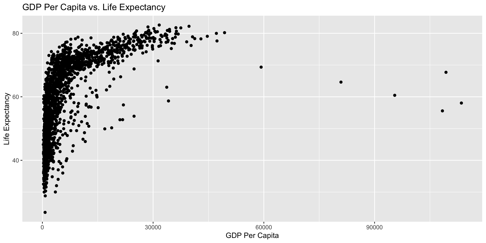
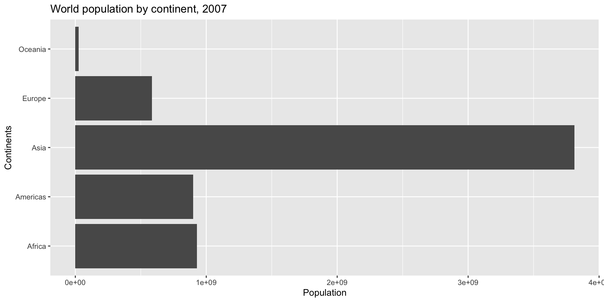
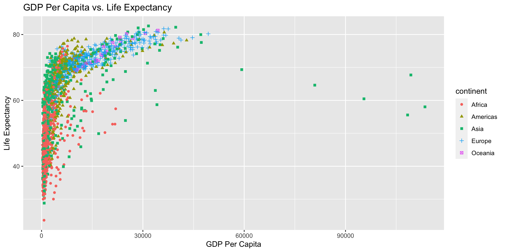
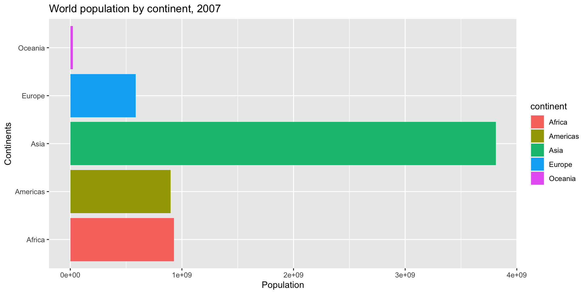
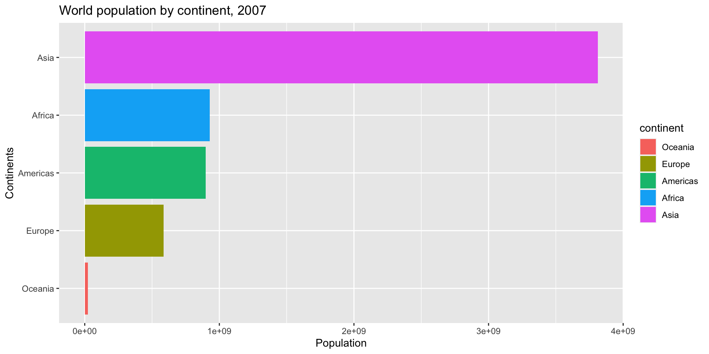

# A tibble: 6 × 2
year population
<int> <dbl>
1 1952 2406957150
2 1957 2664404580
3 1962 2899782974
4 1967 3217478384
5 1972 3576977158
6 1977 3930045807
plot(x = world_population$year, y = world_population$population,type ="l", main ="World population by year in Gapminder",xlab ="Every 5 year from 1952 to 2007", ylab ="Population")

觀察相關的散佈圖
使用 plot() 函數繪製觀察相關的散佈圖。
plot(x = gapminder$gdpPercap, y = gapminder$lifeExp,main ="GDP Per Capita vs. Life Expectancy",xlab ="GDP Per Capita", ylab ="Life Expectancy")
setwd("/Users/kuoyaojen/Desktop/ch13/")png(file ="barplot.png")barplot(world_population_by_continents$population,names.arg = world_population_by_continents$continent,main ="Population by Continents, 2007",xlab ="Continent", "Population")dev.off()
視覺化文法
關於 ggplot2
極高比例的 R 語言使用者依賴 ggplot2 作為視覺化工具。
gg 為視覺化文法 grammar of graphics 的縮寫。
利用正規、有結構的函數堆疊來繪製視覺化。
安裝與載入 ggplot2 套件
install.packages("ggplot2")
library("ggplot2")
ggplot2 作圖流程
準備資料，包含載入、建立、清理與轉換。
使用 ggplot() 函數與 aes() 函數建立座標系統。
以 + 堆疊圖形函數與添加圖形元素。
顯示或者儲存圖形。
觀察分配的直方圖
使用 ggplot() 函數與 aes() 函數建立座標系統。
使用 geom_histogram() 函數堆疊觀察分配的直方圖。
使用 ggtitle() 函數堆疊標題、使用 xlab() 函數堆疊 X 軸標籤、使用 ylab() 函數堆疊 Y 軸標籤。
ggplot2::ggplot(gapminder, aes(x = gdpPercap)) + ggplot2::geom_histogram(bins =30) + ggplot2::ggtitle("GDP Per Capita in Gapminder is left-skewed") + ggplot2::xlab("GDP Per Capita") + ggplot2::ylab("Frequency")

觀察趨勢的線圖
使用 ggplot() 函數與 aes() 函數建立座標系統。
使用 geom_line() 函數堆疊觀察趨勢的線圖。
ggplot2::ggplot(world_population, aes(x = year, y = population)) + ggplot2::geom_line() + ggplot2::ggtitle("World population by year in Gapminder") + ggplot2::xlab("Every 5 year from 1952 to 2007") + ggplot2::ylab("Population")

觀察相關的散佈圖
使用 ggplot() 函數與 aes() 函數建立座標系統。
使用 geom_point() 函數繪製觀察相關的散佈圖。
ggplot2::ggplot(gapminder, aes(x = gdpPercap, y = lifeExp)) + ggplot2::geom_point() + ggplot2::ggtitle("GDP Per Capita vs. Life Expectancy") + ggplot2::xlab("GDP Per Capita") + ggplot2::ylab("Life Expectancy")

觀察排序的長條圖
使用 ggplot() 函數與 aes() 函數建立座標系統。
使用 geom_bar(stat = "identity") 函數繪製觀察排序的長條圖。
使用 coord_flip() 函數將長條圖反轉為水平。
ggplot2::ggplot(world_population_by_continents, aes(x = continent, y = population)) + ggplot2::geom_bar(stat ="identity") + ggplot2::coord_flip() + ggplot2::ggtitle("World population by continent, 2007") + ggplot2::xlab("Continents") + ggplot2::ylab("Population")

調整幾何的形狀與顏色
在 aes() 函數指定 shape、colour 或 fill 參數調整幾何圖形的形狀與顏色。
ggplot2::ggplot(gapminder, aes(x = gdpPercap, y = lifeExp, shape = continent, colour = continent)) + ggplot2::geom_point() + ggplot2::ggtitle("GDP Per Capita vs. Life Expectancy") + ggplot2::xlab("GDP Per Capita") + ggplot2::ylab("Life Expectancy")

ggplot2::ggplot(world_population_by_continents, aes(x = continent, y = population, fill = continent)) + ggplot2::geom_bar(stat ="identity") + ggplot2::coord_flip() + ggplot2::ggtitle("World population by continent, 2007") + ggplot2::xlab("Continents") + ggplot2::ylab("Population")

調整類別變數的順序
ggplot2 套件以因素向量 factor 處理類別變數。
使用 factor() 函數的 levels 參數調整順序。
world_population_by_continents <- world_population_by_continents |> dplyr::arrange(population)bar_order <-as.character(world_population_by_continents$continent)world_population_by_continents$continent <-factor(world_population_by_continents$continent, levels = bar_order)ggplot2::ggplot(world_population_by_continents, aes(x = continent, y = population, fill = continent)) + ggplot2::geom_bar(stat ="identity") + ggplot2::coord_flip() + ggplot2::ggtitle("World population by continent, 2007") + ggplot2::xlab("Continents") + ggplot2::ylab("Population")

儲存視覺化
使用 ggsave() 函數儲存視覺化。
setwd("/Users/kuoyaojen/Desktop/ch13/")ggplot2::ggplot(world_population_by_continents, aes(x = continent, y = population, fill = continent)) + ggplot2::geom_bar(stat ="identity") + ggplot2::coord_flip() + ggplot2::ggtitle("World population by continent, 2007") + ggplot2::xlab("Continents") + ggplot2::ylab("Population")ggplot2::ggsave("barplot.png")
{kind=link}